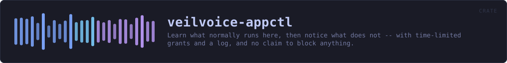

veilvoice-appctl
Learn what normally runs here, then notice what does not -- with time-limited grants and a log, and no claim to block anything.
reference · the same page on GitHub
Learn what normally runs on this machine, then notice what does not.
What this is, said before anything else
This is not application control. It does not stop a program starting, it cannot stop one starting, and nothing in this crate tries. It is a baseline: you tell it to watch for a while, it records what it sees, and afterwards it can tell you when something runs that was not in that picture.
The name is the roadmap's and it is kept because renaming it would leave two names for one thing, but SCOPE is the wording every front end must show, and it says outright that nothing here prevents anything. Real enforcement means a kernel driver or a signed policy blob and an application identity to sign it with, and this project is published under a pseudonym on purpose. Shipping something called "app control" that quietly only watches would be the exact failure this project's second rule exists to prevent.
Learning, and why it has an end
Baseline::learning records what runs. It is not left on: a baseline that is always learning has learned nothing, because whatever an attacker starts becomes part of the picture the moment it starts. So learning is a phase with an end, and Baseline::freeze closes it.
Grants expire, and that is the whole design
Allowing something for ever is how an allowlist becomes a list of everything anybody ever ran. Grants carry an expiry, Baseline::allowed checks it against the clock it is given, and an expired grant is simply not a grant. Nothing sweeps them: an expired entry is kept, because "this was allowed until Tuesday" is worth more to somebody reading the log than a row that vanished.
Permanent grants exist and are spelled Grant::forever, so that choosing one is a thing somebody typed rather than a default they never saw.
The log is append-only, and it is the point
Every decision is recorded: what was seen, whether it was known, which grant covered it and when that grant ends. A control whose decisions cannot be reviewed afterwards is a control nobody can check, and this one is only ever going to be reviewable, since it does not enforce.
In plain words
For a while, this watches which programs you normally run and writes them down. After that, it can tell you when something starts that was not on that list.
It does not block anything. It cannot. It is a way of noticing, not a lock on the door, and anything that told you otherwise would be lying to you about how safe you are.
You can allow a program you recognise, and when you do you say for how long -- an hour, a day, or permanently if you really mean it. Temporary is the normal case, because a list that only ever grows stops meaning anything. Everything it decides is written to a log you can read.
HOW THE CRATE FITS TOGETHER
Every arrow is a crate:: or super:: path one module actually uses, read out of the source rather than drawn by hand.
The same graph as Mermaid source
%%{init: {"theme":"base","themeVariables":{"background":"#1a1b26","primaryColor":"#1f2335","primaryTextColor":"#c0caf5","primaryBorderColor":"#7aa2f7","secondaryColor":"#16161e","tertiaryColor":"#16161e","lineColor":"#737aa2","textColor":"#c0caf5","mainBkg":"#1f2335","nodeBorder":"#7aa2f7","clusterBkg":"#16161e","clusterBorder":"#2f3549","fontFamily":"ui-monospace, SFMono-Regular, Consolas, monospace","fontSize":"14px"}}}%%
flowchart TD
n_lib(["lib.rs<br/>800 lines"])
click n_lib href "https://github.com/tilas01/veilvoice/blob/main/crates/veilvoice-appctl/src/lib.rs" "open the source"This site loads no third-party script, so it cannot run Mermaid; the diagram above is the same nodes and edges drawn by the generator instead. GitHub renders the source below directly.
THE FILES
| File | Lines | What it is |
|---|---|---|
lib.rs | 800 | Learn what normally runs on this machine, then notice what does not. |